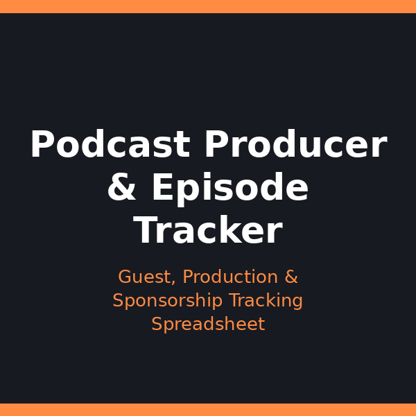

Home
Stop losing track of your podcast production
A simple system for planning episodes, coordinating guests, and keeping sponsor details straight — so nothing slips through the cracks.

Podcast Producer & Episode Management Tracker — $19.99
A ready-to-use spreadsheet and guide for tracking episodes from idea to publish.
Latest Posts
- Podcast Production Essentials: Tools That Keep Your Operation Organized — 2026-08-26
- The Complete Guide to Podcast Episode & Production Management — 2026-08-24
- Why Episode Tracking Matters: The Real Cost of Disorganized Podcast Production — 2026-08-21
- Building a Guest Coordination Workflow: From Outreach to Recording — 2026-08-19
- Production Timeline: Managing Recording, Editing, and Publishing Dates — 2026-08-17
- How to Use the Podcast Tracker: A Walkthrough of Columns and Daily Workflows — 2026-08-15
- Sponsorship and Affiliate Link Tracking: Never Lose Revenue Again — 2026-08-13
- Managing Multiple Podcast Shows Without Burning Out — 2026-08-11
- Episode Tracking FAQ: Your Questions Answered — 2026-08-09